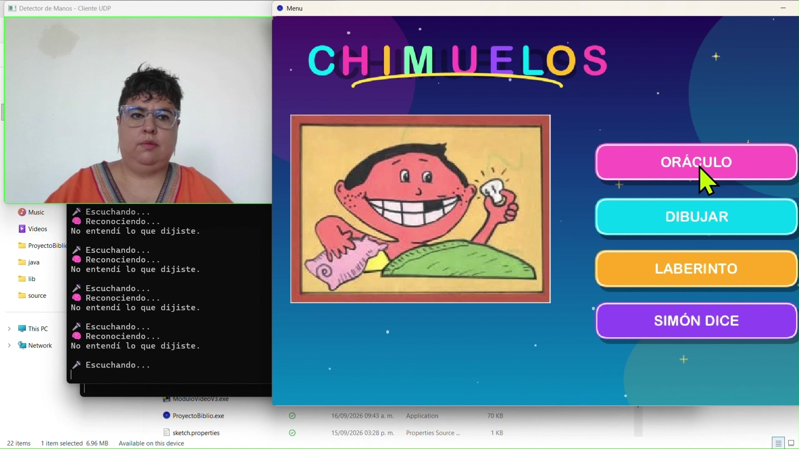
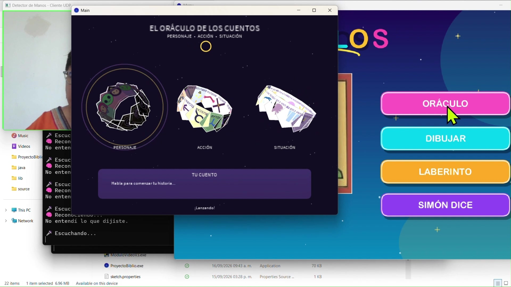
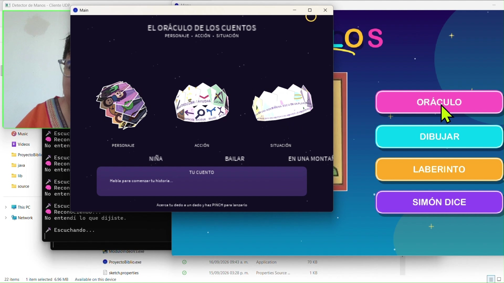
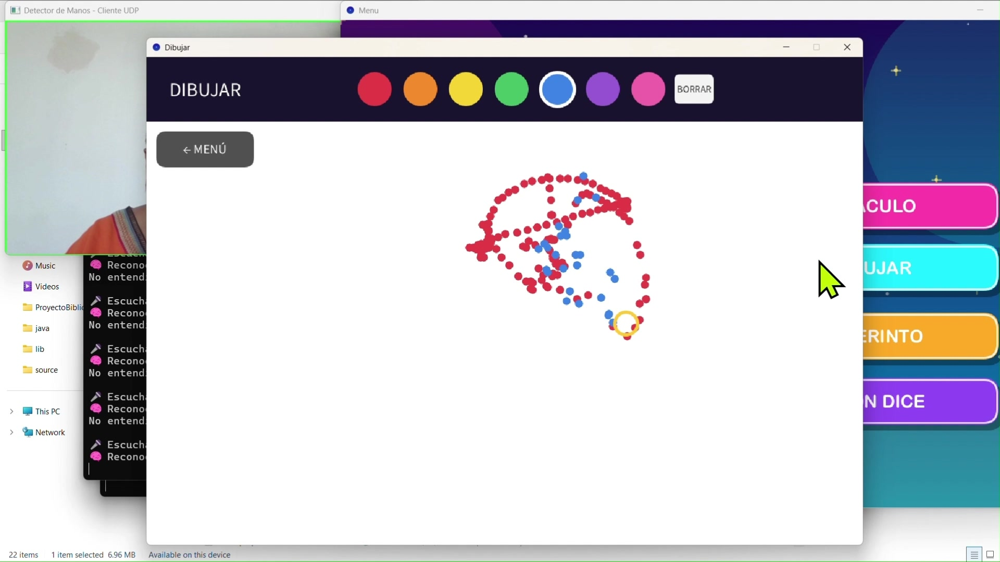
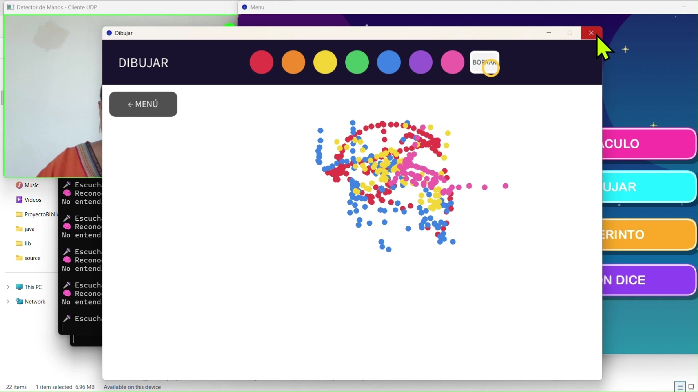
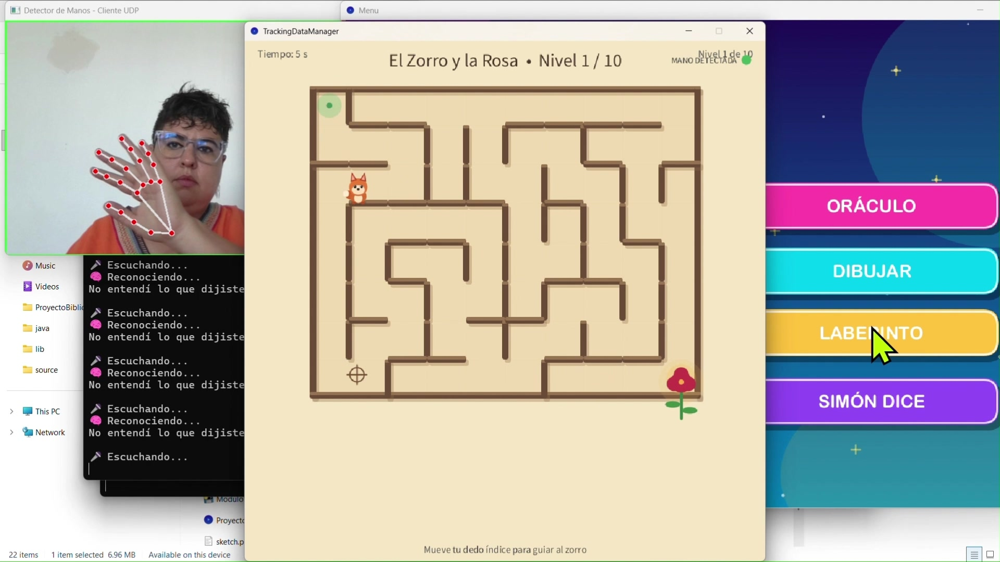
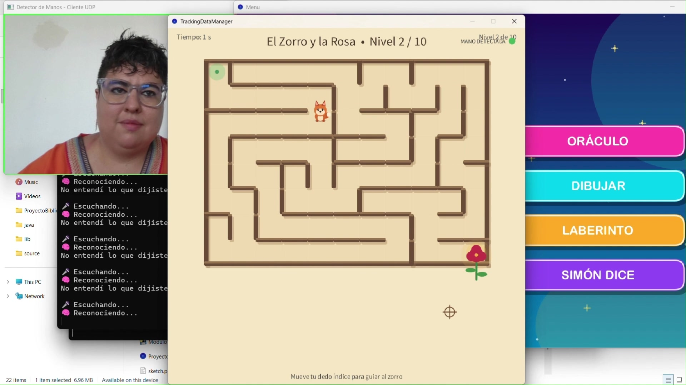
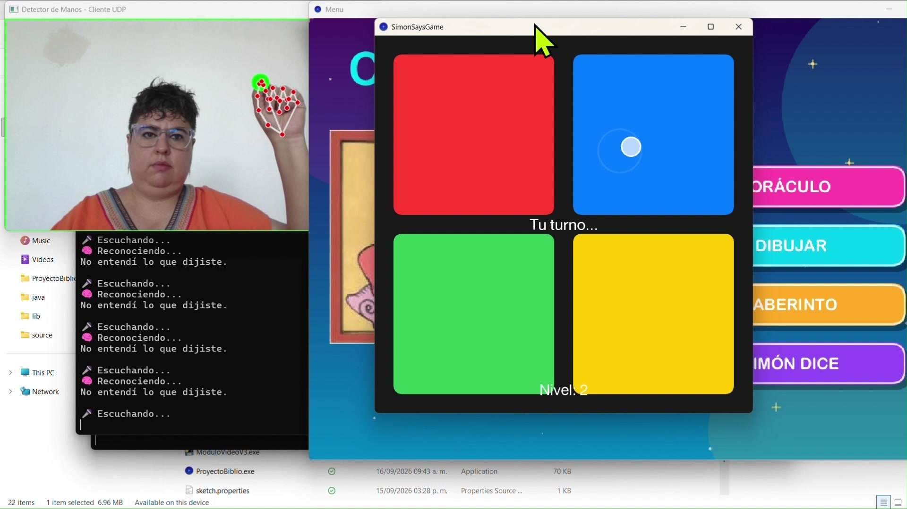
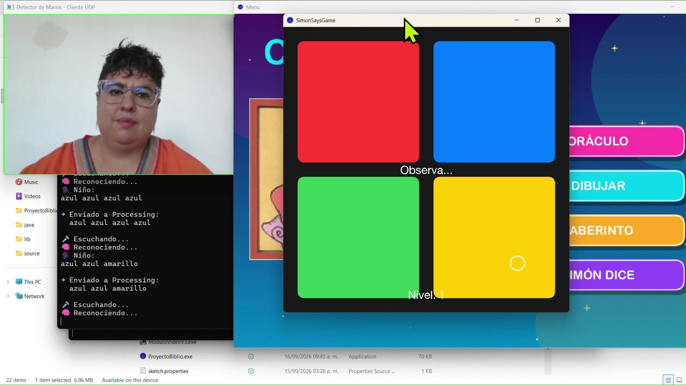

Chimuelo
An interactive arts-center experience where every activity uses Google MediaPipe computer vision, connecting camera-based interaction with games and creative exploration in Processing.
One program. Four activities.
The main screen provides access to Story Oracle, the maze, Drawing, and Simon Says. This overview introduces the complete program before exploring each activity individually.
Technologies and engineering choices
Processing
Visual interfaces and interactive activity logic. Processing is well suited to creative coding, animation, and rapid iteration on visual experiences.
Python & computer vision
All four activities use the Google MediaPipe vision module. Python processes camera-based input and communicates interaction signals to Processing, providing a shared vision layer across the experience.
| Technique | Purpose | Why use it? |
|---|---|---|
| Hand landmark tracking | Locate relevant points on the hand in gesture-driven modules. | Google MediaPipe supplies the hand landmarks used by the shared vision module across Story Oracle, Drawing Studio, the maze, and Simon Says. |
| Pinch detection | Interpret proximity between the thumb and index finger as a gesture. | A simple, deliberate gesture can trigger an action without a physical controller. |
| UDP communication | Exchange interaction messages between Python and Processing in the gesture modules. | Lightweight messages suit frequent local updates. Applications must account for possible message loss and keep their interaction state consistent. |
| AI-assisted speech transcription | Capture children’s spoken stories as text in Story Oracle. | It preserves their own narration and supports exporting their stories to Word documents. |
| Trigger gating | Prevent a sustained gesture from repeatedly launching an activity. | The same gesture can remain visible across many frames; gating is a design measure to avoid duplicate actions. |
Shared architecture: camera input → Google MediaPipe vision module → interaction signals → Processing activities. Story Oracle also includes AI-assisted speech-to-text and Word document export.
Story Oracle
Character and action dice provide prompts for children to invent and narrate their own stories. AI-assisted speech-to-text captures their narration and turns it into text for a Word document.
Gesture-Controlled Maze
The Fox and the Rose: a hand-controlled maze adventure with multiple levels. The demonstration shows the player guiding the fox through the paths toward the rose.
Drawing Studio
A drawing activity connected to the shared Google MediaPipe vision module, combining creative expression with camera-based interaction.
Simon Says
An interactive Simon Says game using the shared Google MediaPipe vision module and Processing.
Project gallery
Two frames from each activity, plus the main screen. Click an image to view it at full size.









Connecting input with experience
I develop the interactive application and its integration with computer vision modules, combining software engineering with experience teaching programming and creative technology.
Explore more projects
Computer vision, interactive applications, and creative software.
← Back to portfolio GitHub profile ↗